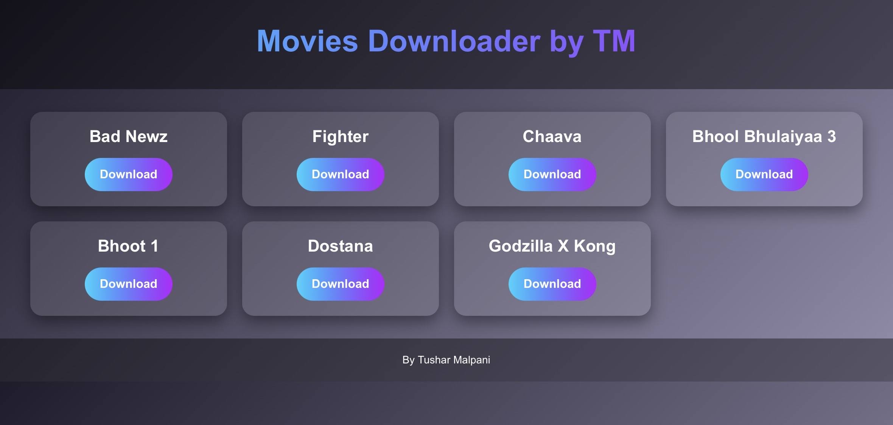
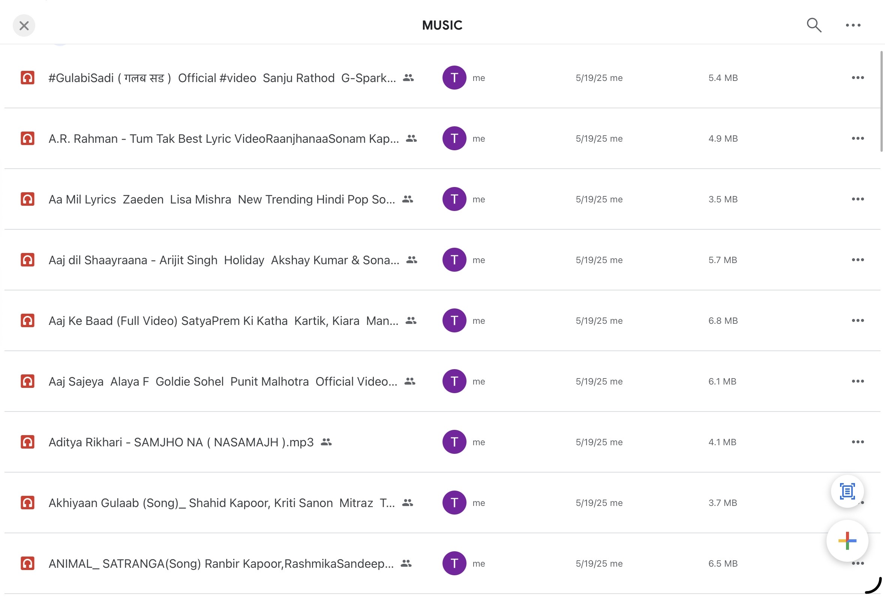
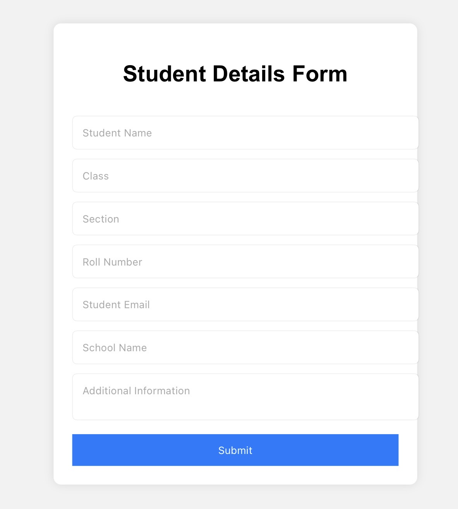
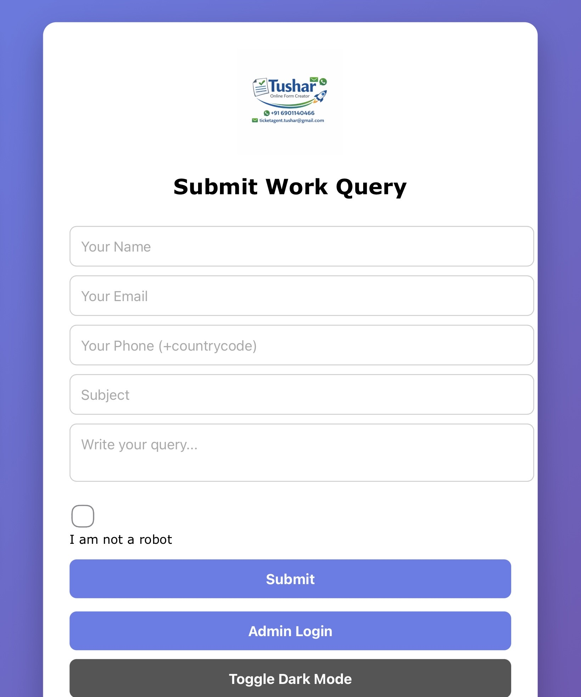
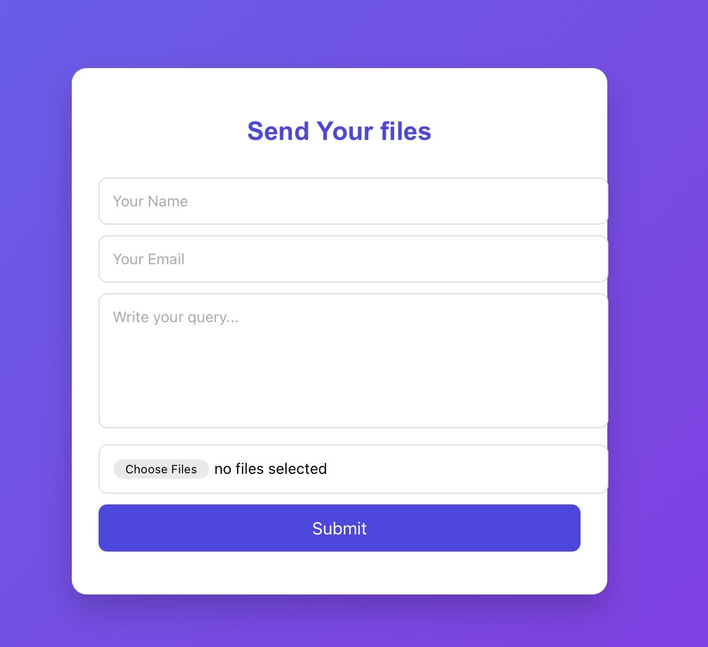

The Movie Downloader project is one of my earliest and most exciting creations. It allows users to download movies directly from a simple web interface. I built this project using HTML, CSS, and JavaScript, and hosted it on GitHub Pages. The idea came from my curiosity about how online platforms manage downloads and how I could replicate that functionality in a simplified way. Through this project, I learned about linking files, handling user inputs, and ensuring smooth navigation. It also taught me the importance of user experience, as I had to design the interface to be intuitive and easy to use. This project reflects my ability to take inspiration from real-world applications and create something functional on my own. It gave me confidence to pursue more complex projects and helped me understand the basics of web hosting and deployment. The Movie Downloader is not just a tool but a milestone in my journey as a young developer, showing how curiosity can lead to meaningful learning experiences.
View Project
The Song Downloader project was created to give users a simple way to access and download music files. I hosted it on Google Drive, making it easy to share with friends and classmates. This project taught me about file hosting, permissions, and how cloud storage can be integrated with web platforms. I wrote detailed instructions for users to ensure they could easily navigate the folder and download songs without confusion. Working on this project helped me understand the importance of accessibility and how technology can bring entertainment closer to people. It also gave me practical experience in managing shared resources online. The Song Downloader may look simple, but it represents my ability to think about user needs and deliver a solution that works. It was also a stepping stone toward more advanced projects where I combined creativity with technical skills.
View Project
The Student Form Submission project was designed to simplify the process of collecting student information. I built this project using HTML forms and hosted it on GitHub Pages. The form allows users to enter details such as name, grade, and contact information, which can then be processed for record keeping. This project taught me about form validation, user input handling, and the importance of clean design. I wanted the form to be easy to use, with clear labels and instructions. Through this project, I realized how powerful simple tools can be when applied to real-world problems. It also gave me insights into how schools and organizations manage data collection. The Student Form Submission project is a practical example of how technology can reduce manual work and improve efficiency. It reflects my ability to identify everyday problems and create solutions that are both functional and user-friendly.
View Project
The Work Form Submission project was created to help professionals and organizations collect work-related data efficiently. Similar to the Student Form project, this form is designed with clarity and usability in mind. Users can submit details about tasks, deadlines, and responsibilities, which can then be stored for future reference. I hosted this project on GitHub Pages, making it accessible to anyone with the link. Through this project, I learned about customizing forms for different purposes and ensuring that they meet the needs of the target audience. It also taught me about the importance of responsive design, as I wanted the form to work well on both desktop and mobile devices. The Work Form Submission project highlights my ability to adapt solutions to different contexts and shows how technology can streamline processes in both academic and professional settings.
View Project
The File Sharing Website is one of my most advanced projects. It allows users to upload and share files easily through a web interface. I built this project to explore how file transfer systems work and how they can be simplified for everyday use. Hosting it on GitHub Pages gave me the opportunity to share it publicly and receive feedback. This project taught me about file handling, user authentication, and the importance of security in web applications. I also focused on creating a clean and modern design, with clear instructions for users. The File Sharing Website represents my growth as a developer, as it combines technical knowledge with practical application. It shows how I can take complex ideas and turn them into functional solutions. This project is a reflection of my vision to create tools that make life easier and more connected.
View Project